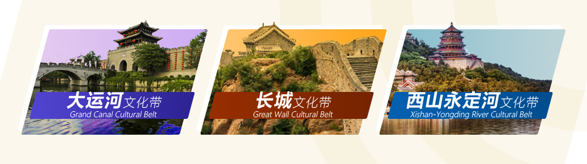
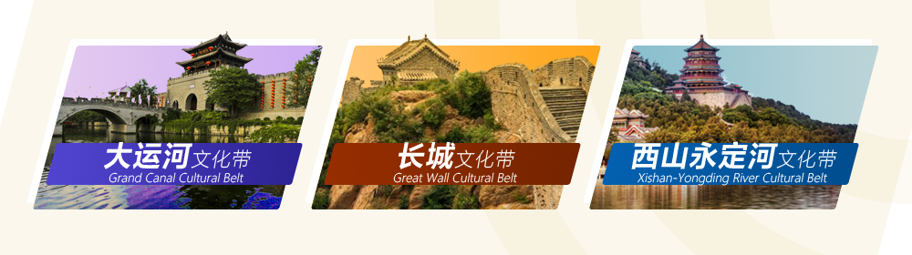

北京市，简称“京”，是中华人民共和国首都、也是中国4个直辖市之一；北京是国家中心城市、超大城市，全国政治中心、文化中心、国际交往中心、科技创新中心，是世界著名古都和现代化国际城市，也是中国共产党中央委员会、中华人民共和国中央人民政府和全国人民代表大会常务委员会的办公所在地。
北京地势西北高、东南低。西部、北部和东北部三面环山，东南部是一片缓缓向渤海倾斜的平原。境内流经的主要河流有：永定河、潮白河、北运河、拒马河等，多由西北部山地发源，穿过崇山峻岭，向东南蜿蜒流经平原地区，最后分别汇入渤海。北京的气候为典型的暖温带半湿润大陆性季风气候，夏季高温多雨，冬季寒冷干燥，春、秋短促。
感受城市温暖 旅游无障碍
激情冰雪 魅力北京
环境艺术 独具特色
 
